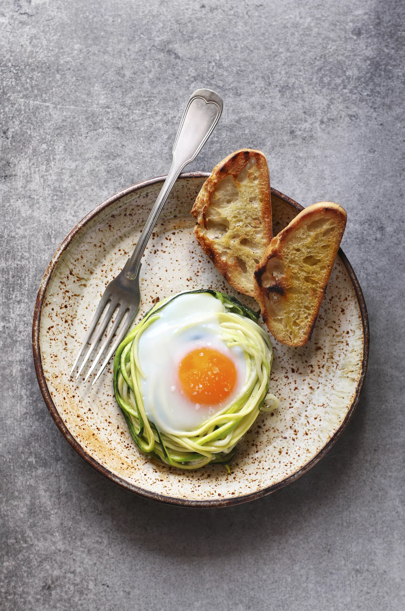
To make a zucchini nest with egg, you will need 1 zucchini, 2 eggs, olive oil, salt, pepper and aromatic herbs of your choice..
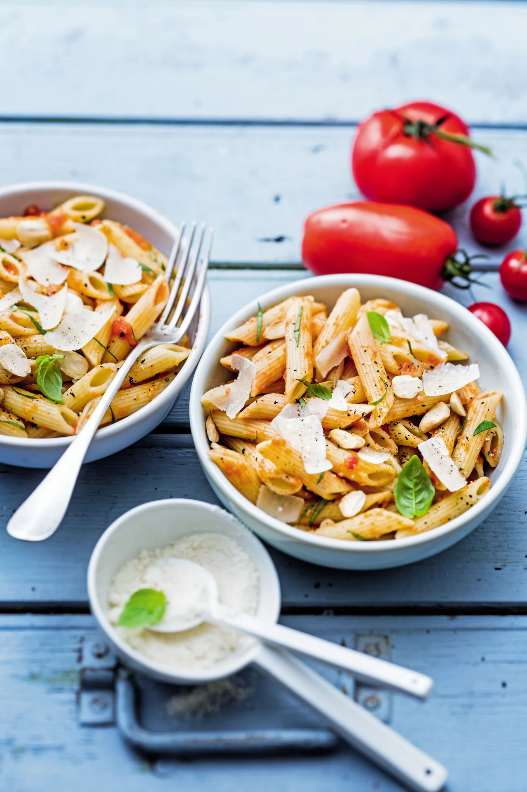
For penne with tomatoes, almonds and basil, you will need 100 g penne, 6 large ripe tomatoes, 2 cloves garlic, 70 g of parmesan, 1 small bunch of basil, 100 g of blanched almonds, 5 tbsp. tablespoon of olive oil, salt, pepper ans Powdered sugar.
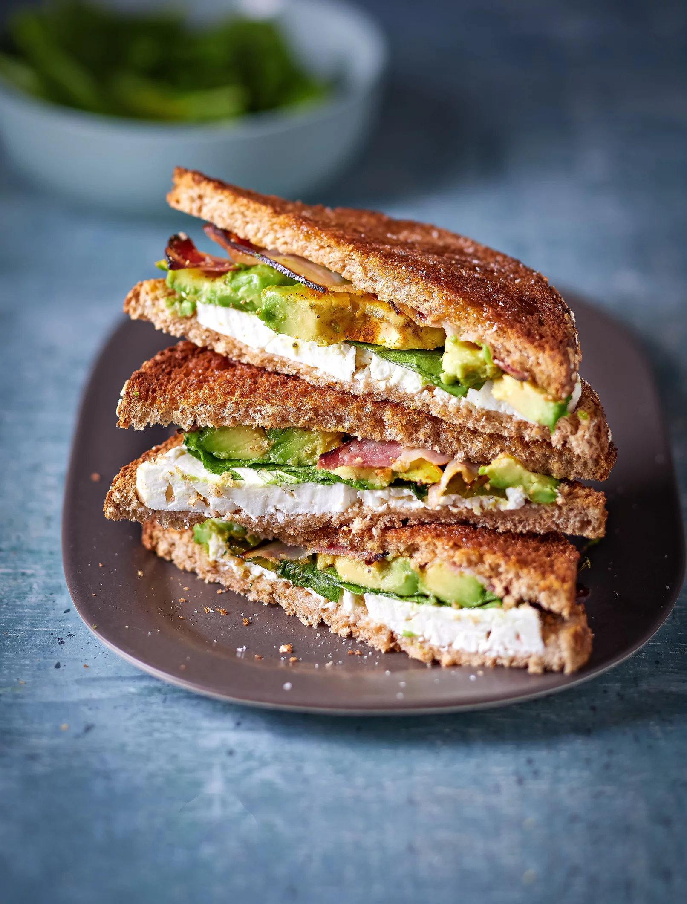
For the avocado croque monsieur recipe, you will need 8 slices of cereal sandwich bread, 2 avocados, 8 slices of bacon, 150 g of feta, 125 g of baby spinach, 1 tbsp. tablespoon of curry, 50 g of butter, 1/2 lemon, Salt and Pepper.
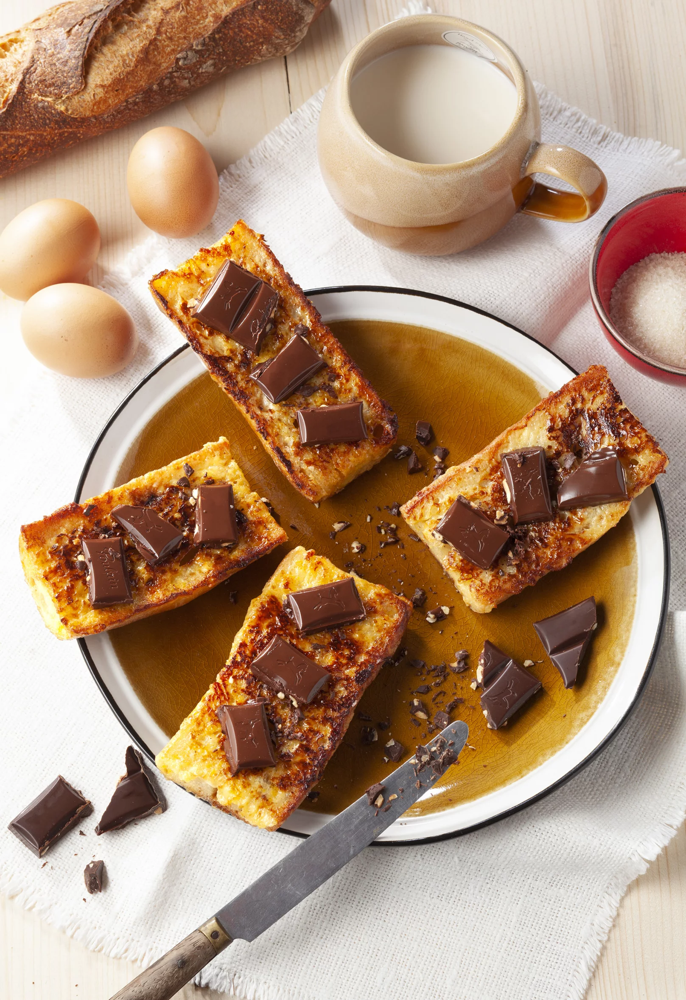
For the dark chocolate baguette recipe you will need 3 eggs, 1 slightly stale traditional baguette, 25 cl of milk, 125 g of caster sugar, 25 g of butter and 1 bar of dark chocolate.
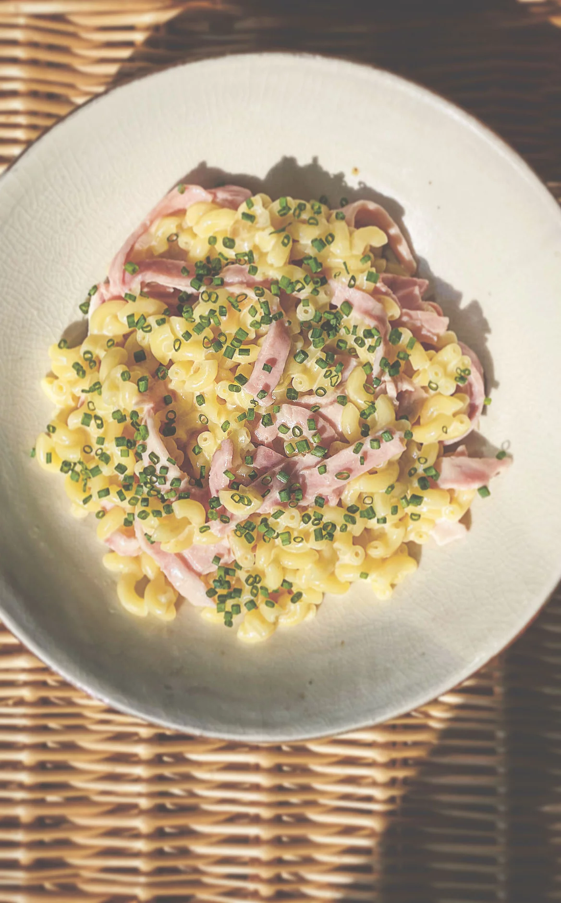
For the ham shell risotto recipe we will need 360 g of shells, 4 slices of white ham, 1 chicken stock cube, 1 onion, 1 clove of garlic, 2 tbsp. tablespoons of crème fraîche, 50 g of grated parmesan, 1 bunch of chives, olive oil, salt and pepper.
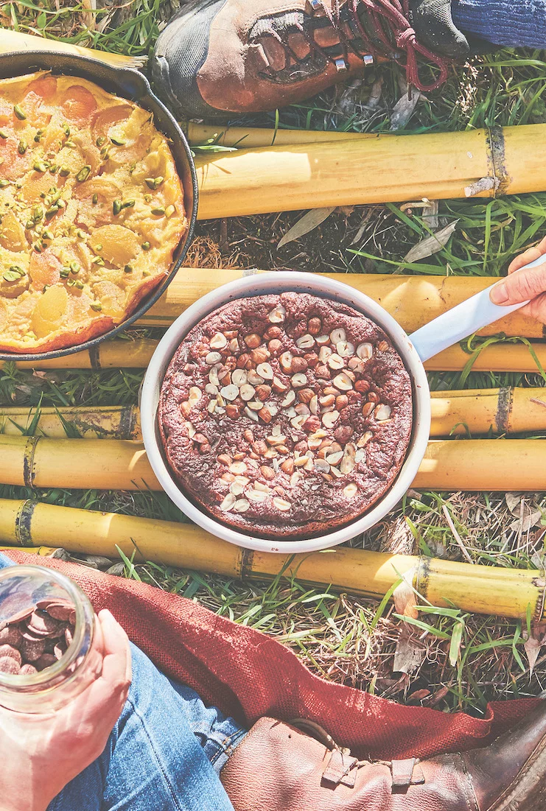
To make a chocolate cake in a pan you will need 150 g of dark chocolate, 80 g of butter, 2 tbsp. tablespoons of chestnut cream, 2 eggs, 100 g of powdered sugar, 80 g of flour, ½ sachet of baking powder and 30 g of hazelnuts.
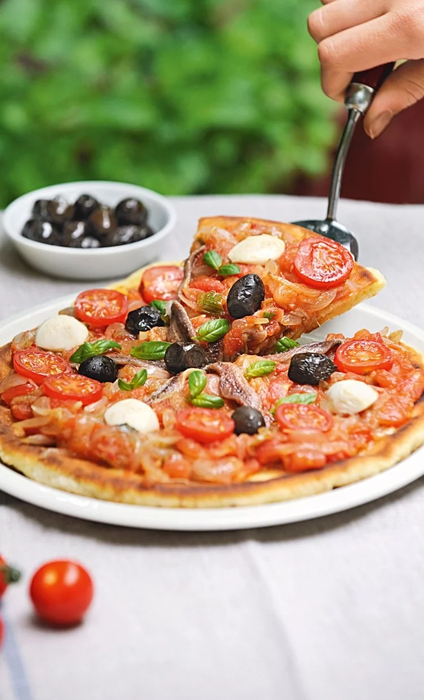
To make a tomato-onion pizza, in the pan and for 2 pizzas of 25 cm in diameter you will need 500 g of tomatoes, 350 g of onions, 250 g of pizza dough, 2 cloves of garlic, 4 tbsp. to s. olive oil, 6 cherry tomatoes, 12 black olives, 8 mini mozzarellas, 3 sprigs of basil, salt and pepper
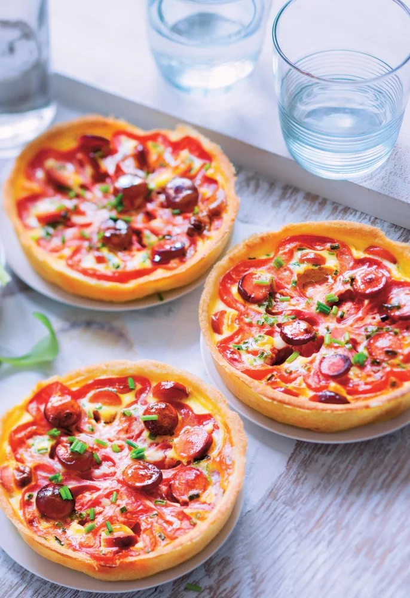
For the recipe for mini mustard Knacki quiches, you will need 1 shortcrust pastry, 4 Knacki, 1 tbsp. tablespoons of whole-grain mustard, 1 large beef heart tomato, 2 eggs, 2 tbsp. tablespoons of crème fraîche, A few sprigs of chives, Salt and freshly ground pepper.
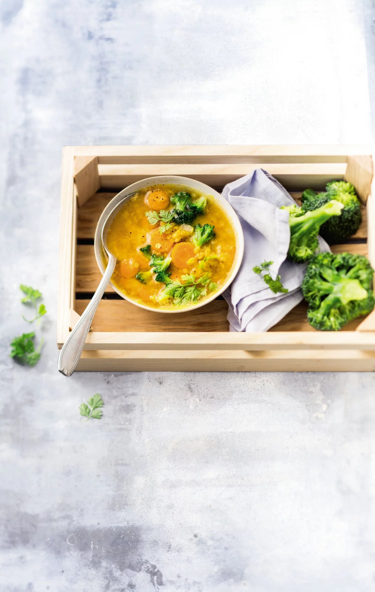
For the pink lentil and carrot soup recipe you will need 250 g of coral lentils, 4 carrots, 200 g of broccoli, 1 onion, 1 l of vegetable stock, 2 sprigs of chervil, 2 tbsp. tablespoon of olive oil, salt and pepper.
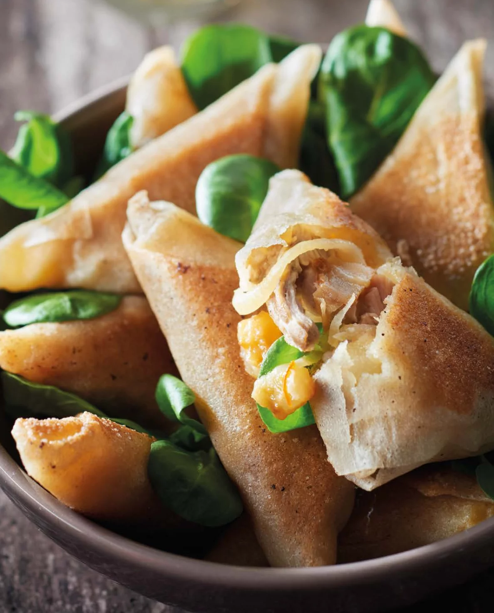
For the recipe for Caesar salad-style chicken bricks you will need 1 green salad of your choice, 120 g of parmesan, 4 brick leaves, 200 g of free-range chicken breast, 1 clove of garlic, 1 organic lemon, 2 shallots, 2 slices of sandwich bread, 1 knob of margarine (10 g), 4 tbsp. tablespoons of extra virgin olive oil, 2 tbsp. tablespoon of Dijon mustard, 6 tbsp. tablespoons of crème fraîche with 15 or 20% fat, Salt and Pepper.
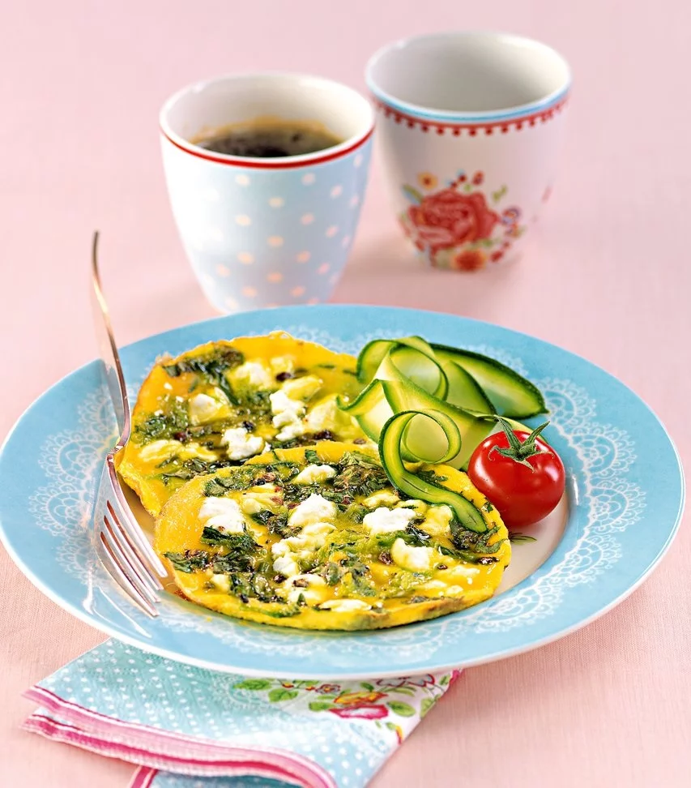
For the recipe for mini omelettes with zucchini and fresh goat's cheese you will need 8 extra-fresh eggs, 150 g of fresh goat's cheese, 2 small zucchini, 10 cl of semi-skimmed milk, 1 tbsp. tablespoon of olive oil, 1 small bunch of coriander, salt and pepper.